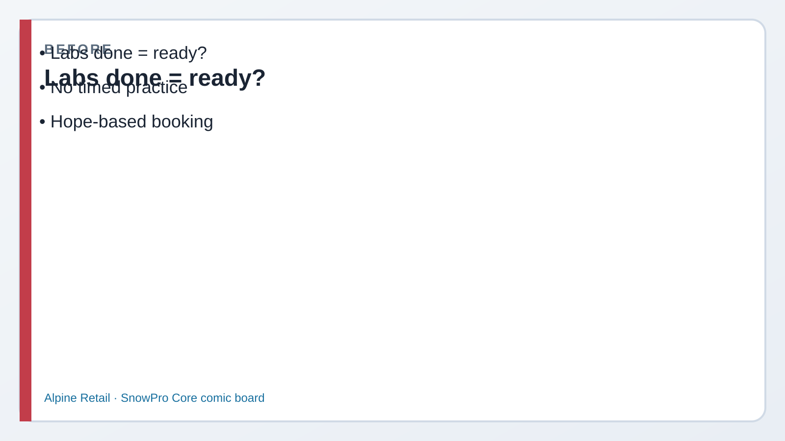
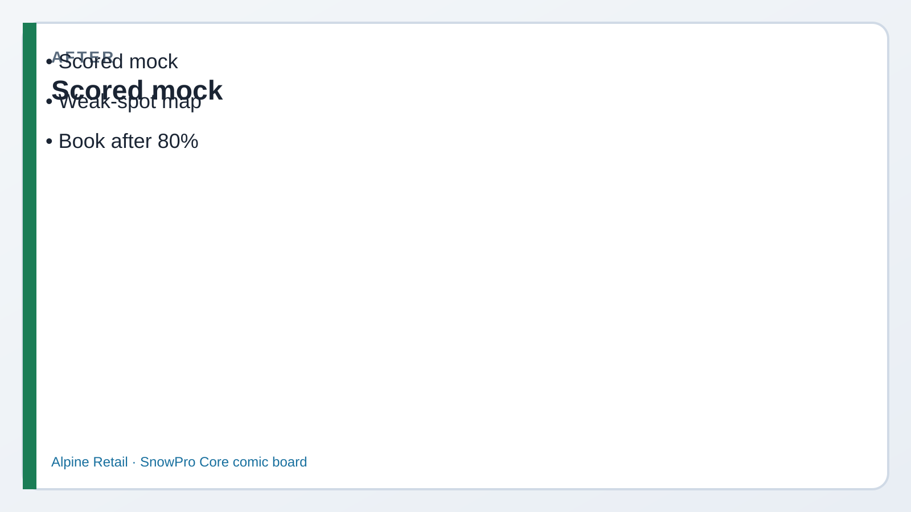

The platform is up. These questions are for you — the same topics the yellow boxes have been marking.
No notes. Full key also in MOCK_ANSWERS.md.
1
Picture first. Look at BEFORE/AFTER → read the comic → then run tiny SQL.
If a paragraph feels heavy, skip to the next comic strip — Dev explains it out loud for you.
Why this set exists
You can click through labs and still mix up a warehouse with storage, or a pipe with a stream.
Forty questions, timer on, no peeking, shows which lab to reopen.
How to use it
45 minutes, 40 questions, score yourself /40.
The yellow note says what a solid score looks like. Misses point back at a lab.

Before Labs done ≠ exam ready.

After Timed mock · weak-spot map · then book.
Episode 19 · Capstone
Dev: answer it before you open it.
DevSenior engineer
The DMart work is the story. This set is yours. Timer on. No peeking until you’re done.
PriyaYou
I’ll mark what I miss and go back to that lab. Then I’ll say the wrap-up again.
One pass, then the score. Peeking early makes the score useless.
Instructions
Time
45 minutes
Phone timer. Close other tabs. ~1 minute per question average.
Official exam is longer; this is a focused mock
Scoring
≥32 / 40 (80%)
Write A/B/C/D on paper. Open each <details> only after the full set.
Also: MOCK_ANSWERS.md for a clean key
Questions are grouped by domain. Each item lists four choices; expand Answer
for the correct letter and why distractors fail.
Domain 1 — Architecture (Q1–Q12)
~31% of the real exam. Labs 01–05.
Which statement about virtual warehouses is true?
A. Warehouses store micro-partitions for tables
B. Warehouses provide compute; table data lives in the storage layer
C. Larger warehouses always reduce storage cost
D. Cloud Services runs inside your warehouse size
Answer
B. WH = compute. Storage holds compressed micro-partitions. A confuses layers; C/D are wrong.
Name the three Snowflake architecture layers.
A. Database, Schema, Table
B. Storage, Query Processing (warehouses), Cloud Services
C. Snowsight, SnowSQL, JDBC
D. Standard, Enterprise, Business Critical
Answer
B. Classic three-layer answer. A is object hierarchy; C interfaces; D editions.
Which edition can configure Time Travel up to 90 days?
A. Standard only
B. Enterprise and above
C. Reader accounts only
D. Any edition with Fail-safe enabled
Answer
B. Standard defaults to 1 day; Enterprise+ for up to 90. Fail-safe ≠ TT length control.
Micro-partitions are best described as:
A. Fixed 50 MB row groups you manually size
B. Contiguous compressed storage units Snowflake manages automatically
C. Warehouse cache blocks only
D. One partition per table always
Answer
B. Auto-managed compressed units (~16 MB uncompressed target historically). Not warehouse cache; not one-per-table.
Which interface is the web UI for Snowflake?
A. SnowSQL
B. Snowsight
C. Kafka Connector only
D. Fail-safe console
Answer
B. Snowsight = web. SnowSQL = CLI.
Which is NOT a table type category the exam expects you to distinguish?
A. Permanent
B. Transient
C. Temporary
D. Fail-safe table
Answer
D. Fail-safe is a retention period after TT — not a CREATE TABLE type.
Cloud Services layer includes:
A. Only virtual warehouse CPU
B. Authentication, metadata, query optimization/management
C. Only S3/Blob customer buckets you create
D. Only Snowpipe billing
Answer
B. Cloud Services = control plane (auth, metadata, optimizer, etc.).
Business Critical is most associated with which need?
A. Free reader accounts only
B. Higher security / some advanced failover & compliance features
C. Disabling Cloud Services
D. Removing Time Travel
Answer
B. BC for stricter security and many HA/failover capabilities.
A secure view is used primarily to:
A. Force warehouse size to X-Small
B. Hide underlying details / prevent some optimization peeking at base objects
C. Replace Fail-safe
D. Enable Marketplace billing only
Answer
B. Secure views protect definition/underlying object exposure compared to normal views.
Which cloud partners host Snowflake? (exam spirit)
A. Only on-prem VMware
B. Major public clouds (AWS, Azure, GCP)
C. Only AWS Gov alone forever
D. Customer laptop Docker only
Answer
B. Multi-cloud SaaS on AWS/Azure/GCP (regions/editions vary).
Cortex / Snowpark / Streamlit in Snowflake sit closest to which blueprint theme?
A. Fail-safe administration
B. AI / apps / developer platforms (architecture awareness)
C. COPY INTO file formats only
D. Reader account billing only
Answer
B. Domain 1 AI/apps awareness on C03.
Clustering keys help primarily with:
A. Making warehouses auto-suspend faster
B. Improving pruning / scan efficiency when filters match cluster dimensions
C. Granting ACCOUNTADMIN rights
D. Creating reader accounts
Answer
B. Clustering influences micro-partition organization for pruning — not RBAC or suspend.
Q1. First 5 minutes in the Pearson seat — what do you do?
Say: Breathe, confirm NDA/rules, note rough time budget (~1+ min/question on the real exam), flag hard items mentally, don’t spiral on Q1. Process over panic.
Q2. Two answers look right — how do you choose?
Say: Eliminate using architecture layers, edition limits, and “who pays / who recovers.” Prefer the option that matches Snowflake’s separation of storage/compute/services. Mark and move if still stuck.
Q3. You blank on Fail-safe — recovery line?
Say: Time Travel = me + SQL inside retention. Fail-safe = after TT, Support only, ~7 days permanent. Transient ≠ Fail-safe. That triad unlocks most Domain 5 recoveries.
Q4. Performance question mentions “slow” — first mental checklist?
Say: After ≥32/40 on this mock (or equivalent), weak domains re-drilled aloud, and playbook skimmed night before — not after a single lucky peek at answers.
For you — before you book
“I timed 40 questions without peeking. Score ___ / 40.
If ≥32: skim EXAM_DAY_PLAYBOOK.md, re-say Domain 5 traps, book Pearson VUE.
If <32: weak-spot map → labs → cold retake.
Checklist: ID ready · quiet room / test center plan · MFA know-how for Snowflake jobs not for the exam login · sleep · no new topics morning-of.
Outcome: book from evidence, not vibes.”